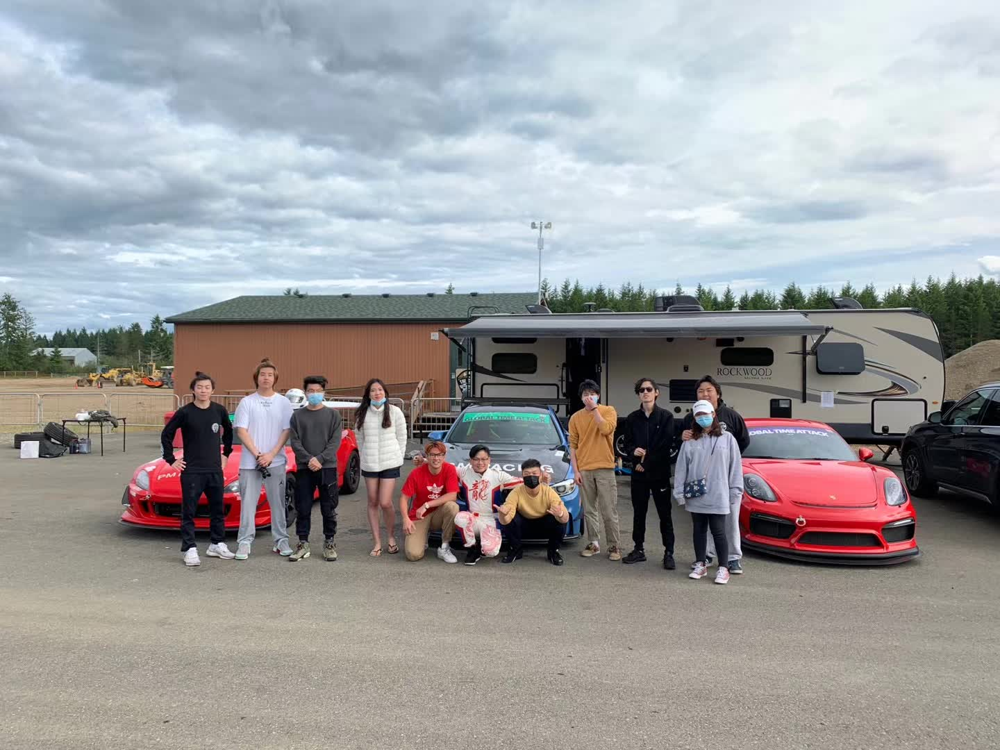
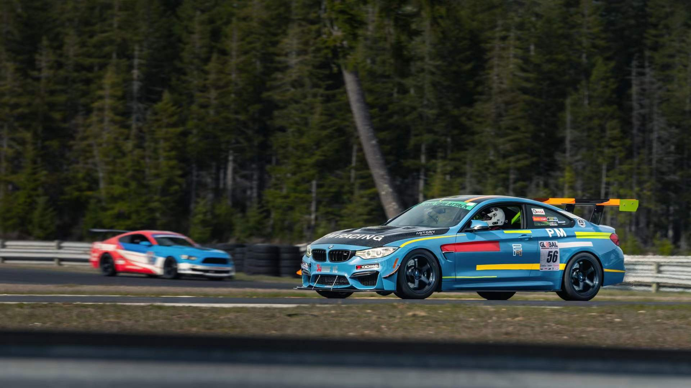
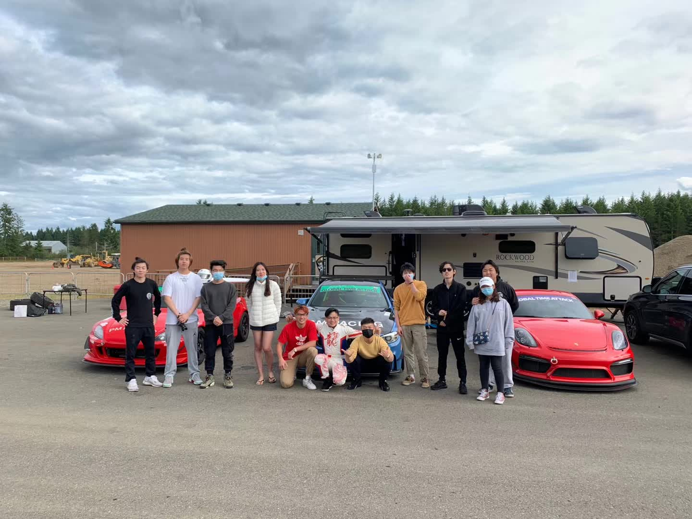
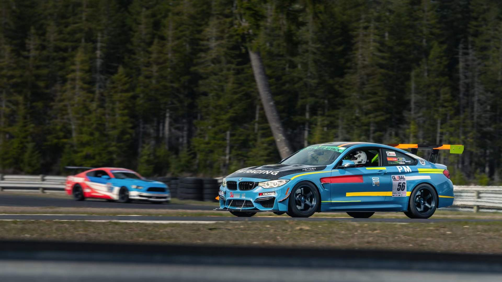

Welcome to PM Racing, the prestigious local racing team known as Pacific Motorsport Racing Team. We are dedicated to conquering the tracks in exhilarating disciplines such as Time Attack, Formula, Radical, and more. At the core of our operations lies our passion for high-performance parts development and sales, an integral aspect of our business.
As PM Racing, we strive to push the boundaries of speed and performance, relentlessly pursuing excellence on the racecourse. Our team comprises skilled and experienced professionals who share an unwavering commitment to our collective goal: dominating the racing scene with unrivaled precision and speed.
With a focus on Time Attack, Formula, Radical, and other adrenaline-pumping racing categories, we consistently challenge ourselves to achieve new heights of performance. Each member of our team is dedicated to honing their skills and optimizing their vehicles to gain a competitive edge, all while fostering a spirit of camaraderie and sportsmanship.
Beyond our dedication to racing, we take great pride in our expertise in high-performance parts development and sales. As industry leaders, we strive to deliver cutting-edge components that enhance the performance and reliability of race cars. Whether it's engine modifications, suspension upgrades, or aerodynamic enhancements, PM Racing offers a comprehensive range of top-tier products to elevate your racing experience.
We invite you to join us on this thrilling journey as we redefine the limits of speed, precision, and innovation. Follow PM Racing, and witness firsthand our unwavering pursuit of victory in the captivating world of motorsports.